神经网络
处理非线性问题
- 最小二乘法（Least Squares）：用于线性回归。
- 感知机（Perceptron）：一种早期的二元线性分类器。
- 逻辑回归（Logistic Regression）：用于分类问题，输出概率。
- 支持向量机（SVM）：尤其指线性SVM，用于寻找最大间隔分类超平面。
这些都属于线性监督学习模型。它们的核心特点是假设特征和目标变量之间，或者不同类别的数据点之间，存在一个线性的关系或边界。
然而，在许多现实世界的挑战中，数据具有非线性结构。当数据本身是高度非线性可分（对于分类问题）或非线性可回归（对于回归问题）时，线性模型的性能会大打折扣，因为它们无法捕捉这种复杂的潜在关系。
第一种方法是保持模型本身（如SVM）的线性特性，但对数据进行非线性转换。
核心思想：我们将原始数据x通过一个非线性映射函数ϕ(x)投影到一个更高维度的特征空间。我们期望在这个新的高维空间中，数据变得线性可分。 核方法（Kernel Method）：这种策略的典型代表是核方法。它非常巧妙地避免了显式计算高维映射ϕ(x)，而是通过一个核函数κ(x,z)=ϕ(x)Tϕ(z)来直接计算在高维空间中的内积。 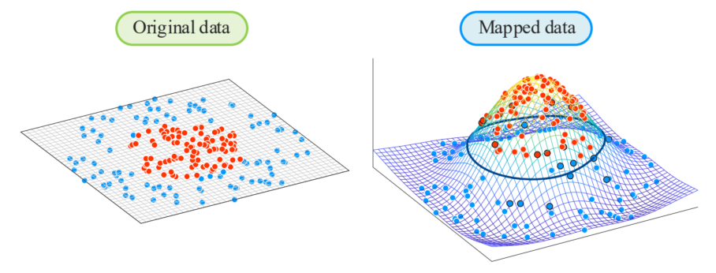
局限性：核方法的成功在很大程度上依赖于如何选择一个合适的核函数κ。对于特定的问题，这往往需要经验和尝试，缺乏一个系统性的解决办法。 第二种方法是放弃线性模型的假设，转而在模型本身中引入非线性。
核心思想：我们构建一个非线性的模型fθ(x)。这里的f是一个关于参数θ和/或输入x的非线性函数。这种方法构成了非线性监督学习模型。 目标：我们希望这个非线性模型fθ(x)能够足够灵活，以近似（或学习到）数据背后潜在的、未知的非线性规律g。 代表模型：神经网络（Neural Networks）：
- 神经网络是这种方法中最具代表性的模型。它之所以如此强大和受到重视，关键在于其通用近似能力（universal approximation power）。
- 通用近似定理指出，一个具有足够多神经元（节点）的（单层）前馈神经网络，可以以任意精度近似任何连续函数。这使其成为拟合复杂非线性关系的理想工具。
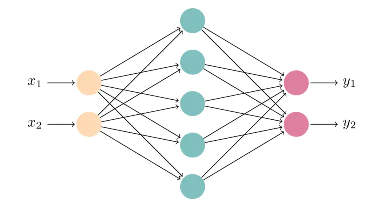
神经网络的基本单元
神经元与神经网络
人工神经网络 (Artificial Neural Networks) 的最初灵感，来源于对生物大脑中神经元 (Neuron) 工作方式的模拟。
- 输入 (Inputs) ：一个神经元的树突会通过成千上万个突触 (Synapses)（即连接点）接收来自其他神经元（通过它们的轴突末梢）传递过来的电化学信号。
- 处理 (Processing) ：所有这些输入信号汇集到胞体 (Soma) 中。胞体会对这些信号进行“加权求和”——有些输入信号是兴奋性的（使其更容易被激活），有些是抑制性的（使其更难被激活）。
- 激活 (Firing) ：当胞体中汇集的信号总强度超过一个特定的阈值时，这个神经元就会被“激活” (fire) ，并沿着其轴突 (Axon) 发送一个“全或无”的电脉冲信号。
- 输出 (Outputs) ：这个信号沿着轴突传到末梢，再通过突触将信号传递给下游的一个或多个神经元。
人工神经网络是对上述过程的数学抽象和简化。我们来建立一个一一对应的关系：
- 生物输入→人工模型的输入特征 (Input Featuresx1,…,xn)
- 生物突触 (Synapses) →人工模型的权重 (Weightsθ1,…,θn)
在生物体中，每个突触传递信号的能力（连接强度）是不同的。在数学模型中，我们用一个权重θi来表示第i个输入xi的重要性。一个大的正权重θi就像一个强兴奋性突触，而一个负权重就像一个抑制性突触。 - 生物胞体 (Soma) →人工模型的加权求和 (∑) 与激活函数 (σ)
①汇集信号：在数学上，这被简化为加权求和，即计算∑i=1nθixi。（如果包含偏置项x0=1,θ0，就是∑i=0nθixi）。 ②阈值激活：在数学上，这由激活函数σ(⋅)来实现。激活函数接收这个加权总和t=∑θixi作为输入，然后输出一个“激活强度”。 - 生物轴突 (Axon) 与输出 (Outputs) →人工模型的最终输出 (Outputfθ(x)=σ(θ⊤x))
人工神经元的输出值fθ(x)，就对应生物神经元沿着轴突传递出去的信号。
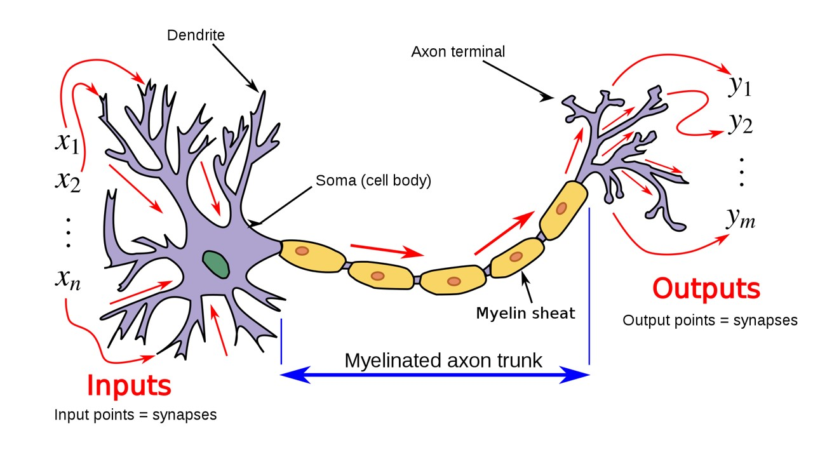
正如大脑是由亿万个神经元互相连接而成的复杂网络，人工神经网络也是将这些简单的人工神经元（计算单元）连接起来构成的。
- 当我们把这些人工神经元分层排列时，就得到了多层神经网络：
- 输入层 (Input Layer)：模拟接收外界信号的感受器神经元。
- 隐藏层 (Hidden Layer)：模拟大脑中负责处理和转换信息的大量中间神经元。
- 输出层 (Output Layer)：模拟负责做出最终反应或决策的运动神经元。
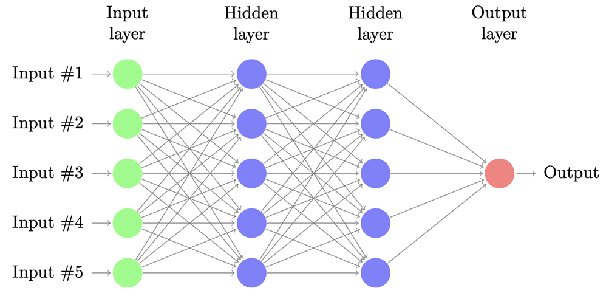
因此，虽然人工神经网络是对生物大脑的高度简化，但它抓住了这种“分层的、非线性的、并行的信息处理”这一核心思想，这正是其强大能力的来源。
多输入单输出结构
我们首先来看最基础的神经网络单元，它通常被称为一个神经元（在历史上也常与“感知机”相联系）。
- 输入向量 (Input)：我们有一个输入样本x，它是一个d+1维的向量：x=(x0,x1,…,xd)。
- x1,…,xd是原始数据的d个特征。
- x0是一个偏置项 (bias term)，通常恒定地设为1。
- 参数 (Parameters)：模型有一组参数θ，也称为权重 (weights)：θ=(θ0,θ1,…,θd)。
- θ1,…,θd是对应于每个输入特征xi的权重。
- θ0是对应于偏置项x0的权重，它在功能上扮演着线性模型中截距 (intercept) 的角色。
- 计算过程分为两步：
- 步骤一：线性求和 (Summation)：首先，模型计算所有输入xi与其对应权重θi的加权总和。这个过程在图中的“Σ”节点完成。
Sum=i=0∑dθixi=θ⊤x 使用向量化表示，这就是参数向量θ和输入向量x的内积（dot product）。 - 步骤二：激活函数 (Activation Function)：接着，该加权总和被传递给一个非线性的函数σ(⋅)。
- 最终输出 (Output)：整个模型的最终输出fθ(x)就是激活函数作用于加权总和的结果：
fθ(x)=σ(i=0∑dθixi)=σ(θ⊤x)
这个fθ(x)就是这个神经元的预测函数。在标量的视角下，可以发现这是一个多输入单输出的结构。 作为广义线性模型
这个神经元结构fθ(x)=σ(θ⊤x)实际上是一个广义线性模型 (Generalized Linear Model, GLM) 的框架。 其核心思想是：模型首先对输入特征进行线性组合（θ⊤x），然后再通过一个“激活函数”σ将这个线性结果转换为最终输出。 通过选择不同的激活函数σ，这个单一结构可以特化为我们已经非常熟悉的几种线性模型： - 特例1：线性回归 (Linear Regression)
如果我们选择σ为恒等函数 (identity function)，即σ(t)=t。那么模型的输出变为： fθ(x)=σ(θ⊤x)=θ⊤x=θ0x0+i=1∑dθixi=θ0+i=1∑dθixi - 特例2：逻辑回归 (Logistic Regression)
如果我们用于二元分类问题，并选择σ为Sigmoid函数（或Logistic函数），即： σ(t)=1+e−t1 fθ(x)=σ(θ⊤x)=1+e−θ⊤x1 这个输出fθ(x)被解释为P(y=1∣x)，即给定输入x时，类别y为1的概率。这正是逻辑回归模型。
从广义线性模型的视角来看，线性回归和逻辑回归可以被视为一个神经元结构。
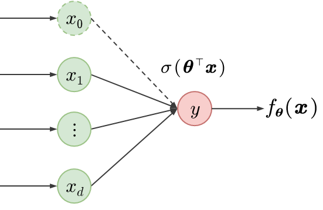
然而，神经网络这一概念的真正威力在于它并不局限于单层。通过将这样的计算单元堆叠起来，构建多层（multi-layer）结构（即包含一个或多个隐藏层），神经网络就能够学习和表示极其复杂的非线性函数，这超越了传统广义线性模型的能力。
神经网络的多层结构
现在，我们从“单个神经元”模型（单输出）向更复杂的网络迈进，首先考虑从一个输入层直接连接到一个多输出层的网络。
输入层-输出层
这个结构是构建多层网络的重要基石，也是像“多分类逻辑回归”（Softmax Regression）这样的重要模型的基础。它将前面的单个神经元结构进行堆叠，得到一个多输入多输出的结构。
- 输入层 (Input Layer)：与单个神经元模型完全相同。输入向量为x=(x0,x1,…,xd)⊤，维度为(d+1)×1。
- 输出层 (Output Layer)：现在我们有K个计算单元（神经元），产生K个输出值y1,…,yK。这K个神经元中的每一个都直接连接到完整的(d+1)维输入向量x。
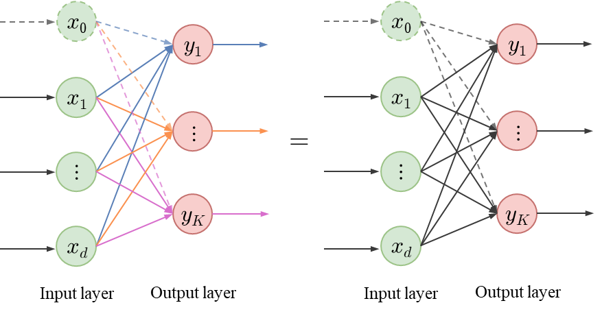
参数 (Parameters)：因为我们有K个输出神经元，所以我们现在有K组独立的权重向量。第k个输出神经元 (k=1,…,K) 有其专属的权重向量wk=(wk0,wk1,…,wkd)⊤。所有这些权重可以被组织成一个权重矩阵W，其维度为K×(d+1)。W的第k行就是wk⊤。 以输入层维度d=4，输出层维度K=3为例： W=⎝⎛⟵w1⊤⟶⟵w2⊤⟶⟵w3⊤⟶⎠⎞=⎝⎛w11w21w31w12w22w32w13w23w33w14w24w34⎠⎞ 第k个输出神经元计算它自己的加权总和tk（也常称为logit或pre-activation）： tk=i=0∑dwkixi=wk⊤x 我们可以用矩阵形式一次性计算所有K个tk值。我们定义t=(t1,…,tK)⊤： t=Wx 步骤二：激活函数 (Activation Function)
我们应用一个输出层激活函数h(⋅)来得到最终的输出向量y=(y1,…,yK)⊤： y=h(t)=h(Wx) 这里的h的选择取决于任务。例如，在多分类任务中，h就是Softmax函数，它需要同时作用于t向量中的所有元素。 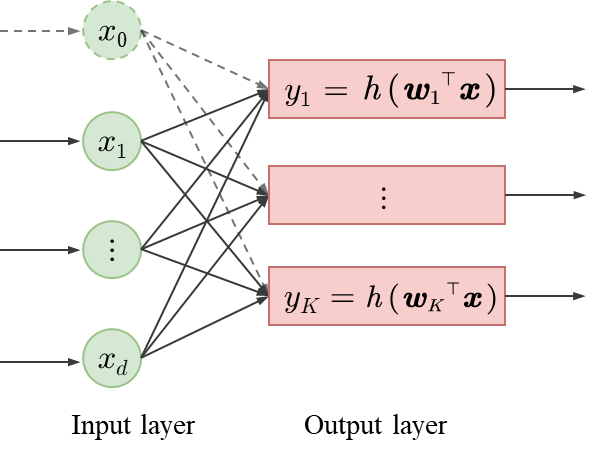
这个“输入层-输出层”的直接模型，本身也是一个广义线性模型，例如多分类逻辑回归（Softmax Regression）就是这个结构的一个完美实例。
输入层-隐藏层-输出层
现在，我们进行真正的飞跃：在输入层和输出层之间插入一个或多个隐藏层 (Hidden Layers)。这就是我们通常所说的多层神经网络 (Multi-layer Neural Network, MLP)。
核心思想：我们不再让输出层直接处理原始输入x。而是先让x通过一个非线性变换，生成一组新的、更高级的“中间特征”z，然后再让输出层来处理z。 - 先从x映射到z。
- 再从z映射到y。
- 输入层 (Input Layer)：
- （与之前相同）包含x1,…,xd（原始特征）和x0=1（偏置项）。
- 输入向量为x=(x0,x1,…,xd)⊤，其维度为(d+1)×1。
- 隐藏层 (Hidden Layer)：
- 这是新增的中间层，它有M个计算单元（神经元）z1,…,zM。
- 这一层同样包含一个偏置项z0=1，它将作为下一层（输出层）的输入。
- 隐藏层向量为z=(z0,z1,…,zm)⊤，其维度为(m+1)×1。
- 输出层 (Output Layer)：
- （与“过渡结构”相同）产生最终预测的K个输出值y1,…,yK。
- K的取值取决于任务：
- K=1：适用于回归问题或二元分类问题。
- K>1：适用于多分类问题（例如K个类别）。
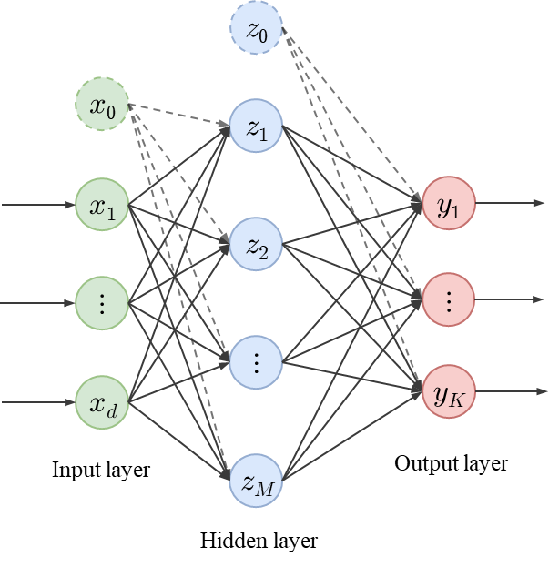
步骤1：从输入层到隐藏层 (x→z) 这一步本身就是一个“输入层-输出层”的网络，只不过它的“输出”是我们称为“隐藏特征”的z。 第m个隐藏单元zm（m=1,…,M）的计算为： zm=σ(i=0∑dvmixi)=σ(vm⊤x) - vm是一个(d+1)×1的权重向量，它包含了从所有输入单元（包括偏置x0）连接到这一个隐藏单元zm的所有权重。
- σ(⋅)是隐藏层激活函数。σ必须是非线性的（例如Sigmoid, Tanh，或ReLU函数）。如果σ是线性的，那么整个两层网络在数学上可以被简化成一个单层网络，从而失去拟合复杂非线性关系的能力。
这个过程x→z可以被看作是：我们同时训练了M个不同的单层模型，并将它们的输出zm（即提取到的特征）汇集起来，作为下一阶段的输入。 步骤2：从隐藏层到输出层 (z→y) 现在，隐藏层向量z=(z0,…,zM)⊤扮演了新的输入角色。这一步完全等同于我们之前讨论的“输入层-输出层”模型，只不过输入是z而不是x。 yk=h(j=0∑Mwkjzj)=h(wk⊤z) - z：这是上一步计算得到的隐藏层向量（包括偏置z0=1）。它现在扮演着输入的角色。
- wk：这是一个(M+1)×1的权重向量，它包含了从所有隐藏单元（包括偏置z0）连接到这一个输出单元yk的所有权重。
- h(⋅)：这是输出层的激活函数。它的选择取决于具体的任务：
- 回归 (Regression)：通常使用恒等函数（即h(t)=t），yk直接输出预测值。
- 二元分类 (Binary Classification)：使用Sigmoid函数，yk输出一个0到1之间的概率。
- 多分类 (Multi-class Classification)：通常使用Softmax函数（它会同时作用于所有的yk，确保所有输出之和为1，代表类别的概率分布）。
备注
- σ和h是什么？
它们是激活函数。它们是模型的超参数 (hyperparameters)，意味着它们是由我们（模型设计者）预先选定和固定的，而不是通过训练数据学习到的。
- σ是隐藏层激活函数，负责引入非线性。
- h是输出层激活函数，负责将输出值转换成适合任务的形式（如概率或连续值）。
- 哪些是未知的参数？
未知的参数（或称可训练参数）是模型需要通过训练过程从数据中学习到的所有权重。
- 第一层权重：从输入层到隐藏层的所有vm向量。总共有M个这样的向量。
- 第二层权重：从隐藏层到输出层的所有wk向量。总共有K个这样的向量。
在数学上，这些参数可以被组织成两个权重矩阵：V(由所有vm组成) 和W(由所有wk组成)。 - vm和wk的维度是什么？
- vm的维度：
- 输入层有d+1个单元（x0,…,xd）。
- vm将这d+1个输入连接到zm。
- 因此，vm的维度是**(d+1)×1。
- wk的维度：
- 隐藏层有M+1个单元（z0,…,zM）。
- wk将这M+1个隐藏单元连接到yk。
- 因此，wk的维度是**(M+1)×1**。
- 与标准（vanilla）线性模型相比，有多少额外的参数？
- 两层神经网络的总参数量：
- 第一层 (Input→Hidden)：有M个vm向量，每个维度为(d+1)。总计M×(d+1)个参数。
- 第二层 (Hidden→Output)：有K个wk向量，每个维度为(M+1)。总计K×(M+1)个参数。
- 总共=M(d+1)+K(M+1)
- 标准线性模型的总参数量：
- 标准线性模型（如多分类逻辑回归）直接从d+1个输入映射到K个输出。
- 它需要K个权重向量，每个向量的维度为(d+1)。
- 总共=K(d+1)
- 参数量的增加：这个两层神经网络的参数数量（Md+M+KM+K）远远多于标准线性模型（Kd+K）。正是这些急剧增加的参数（特别是Md和KM这两项），为模型提供了巨大的容量 (capacity)，使其能够学习和表示高度复杂的非线性函数，这是标准线性模型无法做到的。
神经网络的矩阵表示
我们可以将这个单隐藏层神经网络用更简洁的矩阵形式来表示。
zmyk=σ(vm⊤x),m=1,…,M=h(wk⊤z),k=1,…,K 这种表示方式虽然清晰，但在实现和数学推导时会很繁琐。我们可以使用矩阵和向量运算，将所有神经元的计算“并行化”。
矩阵计算过程
为了让数学表达更简洁，我们暂时省略偏置项 (offset/bias)（即x0和z0）。（在实际应用中，偏置项可以被吸收到权重矩阵中，或者作为单独的偏置向量来处理，这里省略它并不会影响我们对核心结构的理解。） - 输入向量：x∈Rd（之前是d+1，包含一个偏置项）
- 隐藏层向量：z∈RM（之前是M+1，包含一个偏置项）
- 输出向量：y∈RK
我们定义两个权重矩阵 (Weight Matrices)：
- 输入层到隐藏层的权重矩阵V∈RM×d。它的第m行 (row) 就是我们之前定义的权重向量vm⊤。
- 隐藏层到输出层的权重矩阵W∈RK×M。它的第k行 (row) 就是我们之前定义的权重向量wk⊤。
1.计算隐藏层向量z z=σ(Vx) 我们先看括号内的Vx： - V是(M×d)矩阵，x是(d×1)向量。
- Vx的结果是一个(M×1)的向量。
- σ(⋅)：激活函数σ被逐元素 (element-wise) 地应用于向量Vx中的每一个元素。
这个向量的第m个元素，正是V的第m行（即vm⊤）与向量x的内积，即vm⊤x。 因此，z是一个(M×1)的向量，其第m个元素zm=σ(vm⊤x)。这与我们之前的定义完全一致。 y=h(Wz) 同理，我们先看Wz： - W是(K×M)矩阵，z是(M×1)向量。
- Wz的结果是一个(K×1)的向量。
- h(⋅)：输出层激活函数h同样被逐元素地应用于向量Wz。
这个向量的第k个元素，是W的第k行（即wkT）与向量z的内积，即wkTz。 因此，y是一个(K×1)的向量，其第k个元素yk=h(wkTz)。 通过将第一步的z代入第二步，我们可以将整个单隐藏层神经网络模型（从输入x到输出y）写成一个紧凑的函数形式： y=fθ(x)=h(Wσ(Vx)) 这就是神经网络前向传播 (Forward Propagation) 的核心数学表达式。
- 参数θ：整个网络的所有可训练参数（权重）被清晰地组织在两个矩阵中：θ:=(V,W)。
- 层叠结构 (Layered Structure)：这个公式也完美地体现了神经网络的层级思想：一个层的输出是下一个层的输入。
- Vx是对x的线性变换。
- z=σ(Vx)是对x的非线性变换，作为隐藏层的输出。
- Wz是对z的线性变换。
- y=h(Wz)是对z的非线性变换，作为最终的输出。
一个具体的例子
我们可以将抽象的矩阵形式展开为具体的标量（scalar）形式，帮助我们理解上述过程。
- 输入层维度 (d):d=2。即x∈R2。
- 隐藏层维度 (M):M=3。即z∈R3。
- 输出层维度 (K):K=2。即y∈R2。
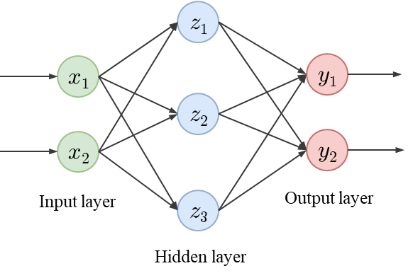
- 输入向量x：
x=(x1x2) - 隐藏层权重矩阵V∈RM×d(即3×2)：它的行 (row) 是vm⊤。
V=⎝⎛⟵v1⊤⟶⟵v2⊤⟶⟵v3⊤⟶⎠⎞=⎝⎛v11v21v31v12v22v32⎠⎞ - 输出层权重矩阵W∈RK×M(即2×3)：它的行 (row) 是wk⊤。
W=(⟵w1⊤⟶⟵w2⊤⟶)=(w11w21w12w22w13w23)
第一步：从x到z 隐藏层维度是3，因此有3个神经元，每个神经元的计算过程：
z1z2z3=σ(v1⊤x)=σ((v11v12)(x1x2))=σ(v11x1+v12x2)=σ(v2⊤x)=σ((v21v22)(x1x2))=σ(v21x1+v22x2)=σ(v3⊤x)=σ((v31v32)(x1x2))=σ(v31x1+v32x2) 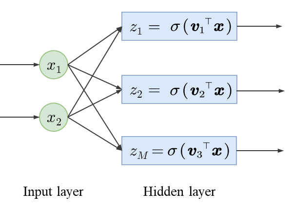
z=σ(Vx)=σ⎝⎛⎝⎛v11v21v31v12v22v32⎠⎞(x1x2)⎠⎞=σ⎝⎛⎝⎛v11x1+v12x2v21x1+v22x2v31x1+v32x2⎠⎞⎠⎞=⎝⎛σ(v11x1+v12x2)σ(v21x1+v22x2)σ(v31x1+v32x2)⎠⎞ 第二步：从z到y 输出层维度是2，因此有2个神经元，每个神经元的计算过程：
y1y2=h(w1⊤z)=h((w11w12w13)⎝⎛z1z2z3⎠⎞)=h(w11z1+w12z2+w13z3)=h(w2⊤z)=h((w21w22w23)⎝⎛z1z2z3⎠⎞)=h(w21z1+w22z2+w23z3) 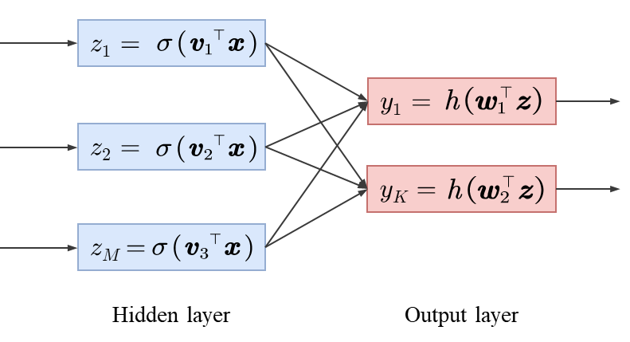
y=h(Wz)=h⎝⎛(w11w21w12w22w13w23)⎝⎛z1z2z3⎠⎞⎠⎞=h((w11z1+w12z2+w13z3w21z1+w22z2+w23z3))=(h(w11z1+w12z2+w13z3)h(w21z1+w22z2+w23z3)) 第三步：从x到y的完整过程 现在，我们将第3步的z1,z2,z3的定义，代入到第4步的y1,y2的表达式中。 y1y2=h(w11z1+w12z2+w13z3)=h(w11σ(v11x1+v12x2)+w12σ(v21x1+v22x2)+w13σ(v31x1+v32x2))=h(w21z1+w22z2+w23z3)=h(w21σ(v11x1+v12x2)+w22σ(v21x1+v22x2)+w23σ(v31x1+v32x2)) 这就是从x1,x2直接计算出y1,y2的完整（且繁杂）的标量公式。 y=h(Wσ(Vx))=h⎝⎛(w11w21w12w22w13w23)σ⎝⎛⎝⎛v11v21v31v12v22v32⎠⎞(x1x2)⎠⎞⎠⎞=h⎝⎛(w11w21w12w22w13w23)⎝⎛σ(v11x1+v12x2)σ(v21x1+v22x2)σ(v31x1+v32x2)⎠⎞⎠⎞=h((w11σ(v11x1+v12x2)+w12σ(v21x1+v22x2)+w13σ(v31x1+v32x2)w21σ(v11x1+v12x2)+w22σ(v21x1+v22x2)+w23σ(v31x1+v32x2)))=⎝⎛h(w11σ(v11x1+v12x2)+w12σ(v21x1+v22x2)+w13σ(v31x1+v32x2))h(w21σ(v11x1+v12x2)+w22σ(v21x1+v22x2)+w23σ(v31x1+v32x2))⎠⎞ 这种矩阵表示法之所以如此重要，是因为它不仅在数学上更简洁，而且在计算上效率极高，因为它允许现代计算硬件（如GPU）并行处理所有的矩阵和向量运算。
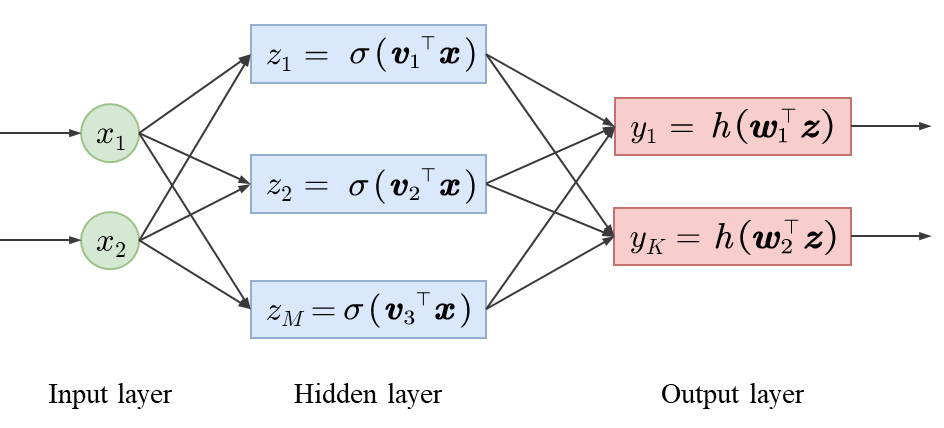
神经网络的配方
在我们已经建立的模型y=h(Wσ(Vx))中，σ和h就是激活函数。它们是预先选定的、固定的非线性函数，是神经网络能力的核心来源。 激活函数
我们来详细探讨一下隐藏层激活函数σ和输出层激活函数h的常见选择。 隐藏层激活函数
隐藏层激活函数σ的最主要任务是引入非线性。如果σ是一个线性函数，那么σ(Vx)只是一个线性变换，整个两层网络y=h(W(Vx))也会坍缩成一个单层的线性模型，从而失去拟合复杂函数的能力。 σ(t)=1+e−t1 - 特点：这是一个历史悠久且非常常见的选择。它是一个平滑的"S"形曲线。它会将任意实数输入t压缩到(0,1)范围之间。这个输出可以被直观地理解为神经元的“激活率”或“饱和度”（从0%到100%）。
- 局限性：
- 梯度消失 (Vanishing Gradients)：在t的值非常大（t→∞）或非常小（t→−∞）时，Sigmoid函数的曲线变得非常平坦，其导数（梯度）趋近于0。在深度网络中，这会导致梯度在反向传播时逐层衰减，使得网络深层的权重很难得到更新，训练变得非常缓慢。
- 非零中心 (Not Zero-centered)：它的输出恒大于0。这会导致后续层的输入始终为正，可能在训练动态中引入一些不理想的“Z字形”更新（zig-zagging dynamics）。
σ(t)=et+e−tet−e−t - 特点：Tanh函数在形状上与Sigmoid非常相似。事实上，它就是Sigmoid函数的缩放和平移版本：tanh(t)=2⋅σ(2t)−1。它将输入压缩到(−1,1)范围之间。
- 优势：它的输出是关于原点对称的，即零中心 (Zero-centered)。以0为中心的输出通常被认为更有利于模型训练，有助于下一层更快地收敛。
- 局限性：它同样存在梯度消失的问题。
ReLU (Rectified Linear Unit，修正线性单元)
σ(t)=max(0,t) - 特点：这是目前最流行的隐藏层激活函数之一。计算极其简单。如果输入t大于0，输出就是t本身；如果输入t小于或等于0，输出就是0。
- 优势：
- 解决梯度消失问题（在正区间）：当t>0时，ReLU的导数恒为1。这使得梯度可以很顺畅地在网络中反向传播，极大地加快了深度网络的训练速度。
- 计算效率高：它只涉及一个简单的比较和赋值操作，远快于Sigmoid/Tanh中的指数运算。
- 引入稀疏性 (Sparsity)：它会使一部分神经元的输出变为0（当t≤0时），这使得网络的表示变得稀疏，可能有助于提高模型的泛化能力并减少过拟合。
- 局限性：
- 非零中心：输出同样是非负的。
- Dying ReLU问题：如果一个神经元的输入在训练过程中始终为负，那么它的输出将永远是0，梯度也将永远是0。这个神经元将“死亡”，不再对任何数据产生响应，也无法再通过训练更新其权重。
Leaky ReLU (解决Dying ReLU问题)
σ(t)={tαtif t≥0if t<0orσ(t)=max(αt,t) - 特点：它在ReLU的基础上做了修改。当t为正时，它和ReLU一样。当t为负时，它不再输出0，而是输出一个非常小的负值αt。因此，α是一个很小的、预先设定的超参数（Hyperparameter），例如α=0.01。
- 优势：
- 解决Dying ReLU问题：这是它最主要的动机。由于当t<0时，梯度不再是0，而是α，这保证了即使神经元在训练初期总是接收到负输入，它依然可以反向传播梯度并更新权重，神经元不会轻易“死亡”。
- 继承ReLU的优点：它基本保留了ReLU在正区间的线性、非饱和特性以及计算上的高效性。
- 变体：PReLU (Parametric ReLU) 是一个更高级的变体，它将α不再视为一个固定的超参数，而是作为一个可学习的参数，让网络在训练过程中自己决定α的最佳值。
输出层激活函数
输出层激活函数h的选择完全取决于我们的应用任务。它的作用是将隐藏层的最后一组输出转换为我们需要的最终输出格式。 神经网络的最后一层（从z到y）负责将隐藏层学到的高级特征z转换为我们最终需要的输出y。 - 回归 (Regression)
恒等映射：在回归任务中，我们希望预测一个任意的连续值（例如房价、温度）。这个值可以是任何实数（正、负或零）。因此，我们不需要对最后一层的线性输出t=w⊤z做任何变换，直接将其作为预测值yk即可。 - 二元分类 (Binary Classification)
Sigmoid函数：在二元分类中，我们希望输出y=1的概率P(y=1∣x)。概率必须在[0,1]之间。Sigmoid函数完美地实现了这个转换。 h(t)=1+e−t1 这使得神经网络的最后一层等价于一个逻辑回归 (Logistic Regression) 模型，只不过它的输入不是原始的x，而是隐藏层提取的特征z。 - 多分类 (Multiclass Classification)
在K类分类问题中，我们希望输出一个K维的向量y=(y1,…,yK)，其中yk代表输入x属于第k类的概率。这个概率向量必须满足两个条件：所有yk≥0，且∑k=1Kyk=1。 yk=h(t)k=∑j=1Ketjetk Softmax函数作用于所有K个输出单元的线性激活值tk=wk⊤z： 1.etk：通过指数函数，将所有（无论正负）的tk变为正数。 2.∑j=1Ketj：计算所有这些正数的总和。 3.∑……：将每个etk除以这个总和，进行归一化。 这使得神经网络的最后一层等价于一个多分类逻辑回归 (Multi-class Logistic Regression) 模型（也常被称为Softmax回归）。
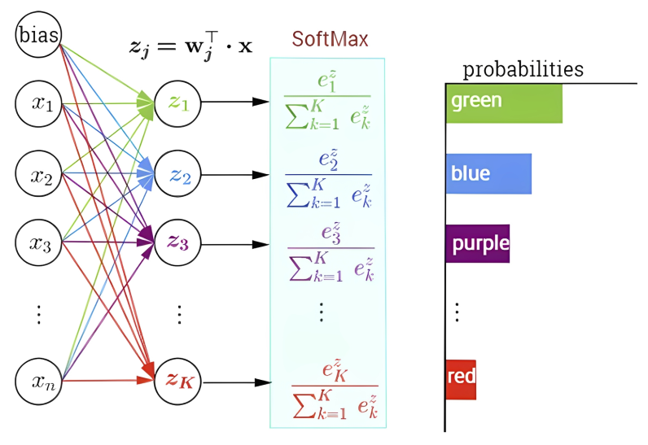
表示能力
- 监督学习的目标：在监督学习中，我们的核心任务是去近似（或学习）一个未知的、潜在的规律，记为g。这个g是数据背后真正的“真相”（例如，能完美区分猫和狗的那个“上帝函数”）。
- 现实的挑战：在绝大多数有价值的问题中，这个潜在的规律g本身就是非线性的。例如，识别图片、理解语音、预测股票市场等，它们的关系都极其复杂，绝非一条直线或一个平面所能描述。
- 引出定理：既然g是非线性的，我们就需要一个有能力表示非线性函数的模型。接下来的通用近似定理 (Universal Approximation Theorem) 证明了神经网络（哪怕是仅有一层隐藏层的网络）正是我们所需要的工具。
通用近似定理
通用近似定理 (Theorem: Universal Approximation Power) 是一个在神经网络领域极其重要的理论基石。它用一句话概括就是：只要隐藏层足够“宽”，一个简单的单隐藏层神经网络就能够以任意精度近似任何连续函数。
- “g是一个连续函数”：这排除了那些有瞬时跳变的“奇异”函数，但在现实世界中，我们关心的大部分规律（如图像、声音）都可以被认为是连续的。
- “单隐藏层神经网络”：这是最令人惊讶的部分。我们不需要一个极其深、极其复杂的网络。理论上，一个“足够宽”（即M足够大）的单层网络就足够了。
- “近似任意良好 (g arbitrarily well)”：这个短语的数学含义就是∣fθ(x)−g(x)∣<ε。它的意思是：
- “你来定标准”：你先说你希望你的模型和“真相”g之间最大能容忍多少误差（即ε）。
- “我保证能做到”：定理向我们保证，只要你给的标准ε不是0，我就一定能找到一个（具有足够多神经元M和合适权重θ的）单隐藏层网络fθ，它在所有数据点上的表现都满足你的误差要求。
近似的本质
这个定理听起来很神奇，它在数学上如何做到“近似”的呢？我们以基于ReLU 激活函数的神经网络为例。
- 基本单元：一个ReLU激活的隐藏单元hd=max(0,θd0+θd1x)。它本身是一个非常简单的分段线性函数（在某一点有一个“折点”）。
- 网络输出：最终的输出y=ϕ0+∑d=1Dϕdhd是所有这些分段线性单元的加权总和。
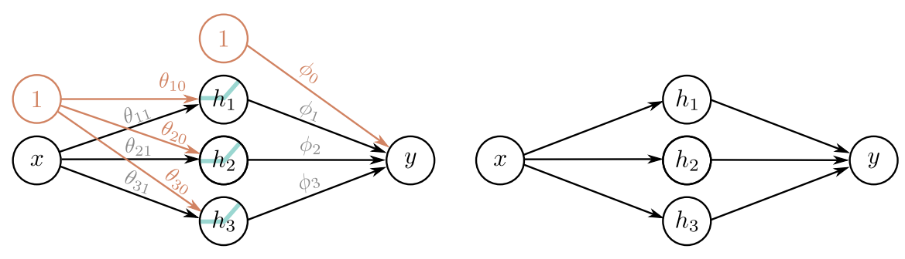Understanding Deep Learning
一堆分段线性函数的总和，其结果仍然是一个分段线性函数。因此，一个具有D个隐藏单元的单层ReLU网络，其最终输出y(x)就是一个由多段直线连接而成的分段线性函数。 这如何近似一个弯曲的连续函数呢？答案就是：用足够多的、足够短的直线段来拼出一条曲线。
网络中每增加一个隐藏单元（D增加 1），模型就最多增加一个“折点”(joint)。从 1 个线性区域（没有折点）开始，D个隐藏单元最多能创造出D+1 个线性区域。 下图完美地展示了这个过程。我们试图用一个分段线性的ReLU网络（实线）来近似一个平滑的连续函数（虚线）。例如，一个有 5 个隐藏单元（D=5）的网络，可以创造出 5 个线性区域（理论上最多可达D+1=6个）；当D=10时，有 10 个线性区域（理论上最多可达10+1=11个）。当D 足够多时，模型产生的线性区域（折线段）就足够短、足够密。此时，这条“折线”与真实曲线几乎无法区分，实现了高精度近似。  Understanding Deep Learning
Understanding Deep Learning也就是说，增加隐藏层的宽度（神经元数量D）= 增加同一层的神经元数量D = 增加“折线段”的数量（严格来说是D+1），我们就增加了模型的“容量”（capacity），使其有能力拟合任意复杂的连续函数。 那么，你肯定会好奇，如果我们增加的是层数 (Depth) 呢？
- 增加宽度是“加法”：D个神经元→最多D个折点，产生D+1个折线段。
- 增加深度是“乘法”：D1个神经元的层 +D2个神经元的层→最多D1×D2个折点，产生(D1+1)×(D2+1) 个折线段。
我们仍以ReLU神经网络为例。下图是一个两层的网络，其函数是y′=f2(f1(x))。 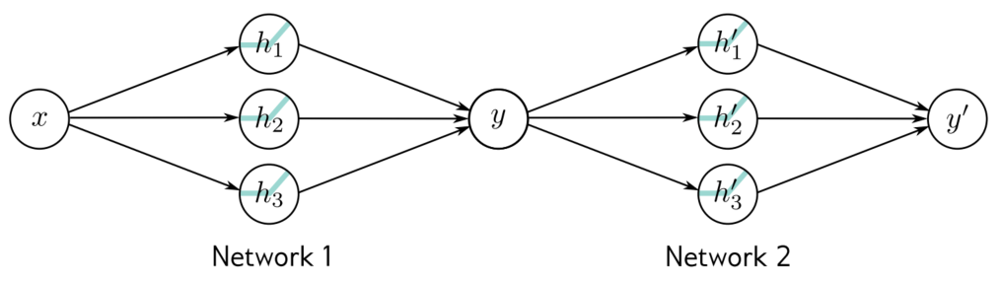
- Network 1：y=f1(x)，这个网络有 3 个隐藏单元。它的输出y是关于输入x的一个分段线性函数，分成了（最多）4 个线性区域（即3+1=4个折线段，斜率不同）。（注：图中为了清晰，只画了 3 个线性区域）
- Network 2：y′=f2(y)，这也是一个由 3 个隐藏单元构成的分段线性函数，对应4 个线性区域。
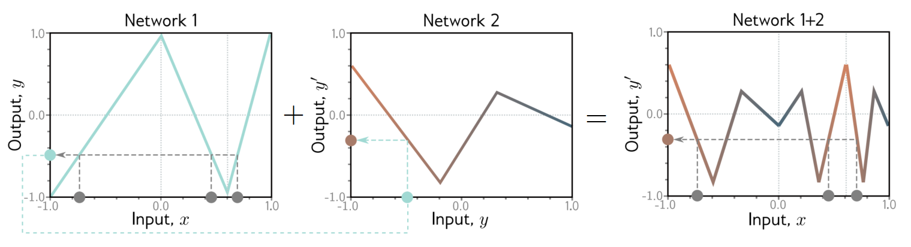
网络的复合y′=f2(f1(x))： 现在，我们把f1的输出y当作f2 的输入。这就是一个两层的深度网络。关键点在于第二层网络f2的完整功能（那 3 个折线段）会“套用”在第一层网络f1的每一个 线性区域上。 例如f1有三个线性区域（向上，向下，再向上），对于f1的第一个线性区域（向上），它会与f2(y)的所有折线段进行函数复合 (Function Composition)。同理，对于f1的第二个线性区域，它也会与f2的所有折线段进行复合，以此类推。以这里的图片为例，复合后的折线段数量为3×3=9。 最终的结果就是Network 1 的D1个线性区域，每一个内部都包含了 Network 2 的D2个线性区域。总的线性区域数量最多可达(D1+1)×(D2+1)。下面这个图片会更加形象： 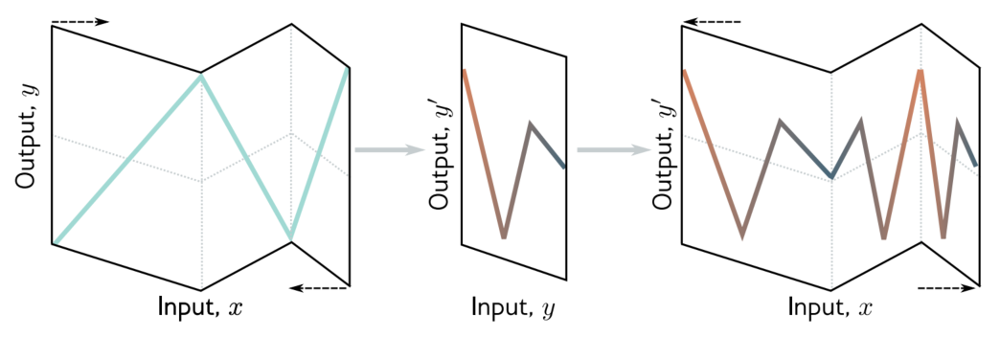
总之，神经网络通过这种逐层复合，能够以指数级的效率（近似乘法）构建出极其复杂的分段线性函数，这就是“深度”的力量。
近似的代价
这个定理告诉我们神经网络“能做什么” (Representation)，但接下来我我们需要知道“是怎么做的” (Interpretation) 以及“代价是什么” (Optimization)。
- 共同点：和核方法（Kernel Methods）一样，神经网络也是在一个非线性特征空间中拟合一个线性模型。
- 回顾我们的模型：y=h(Wz)，其中z=σ(Vx)。
- 这里的z就是新“构造”出来的非线性特征。
- h(Wz)这一步就是在z空间上拟合一个（广义）线性模型。
- 关键区别（最重要的一点）：
- 核方法：x→ϕ(x)的这个特征映射ϕ（由核函数κ隐式定义）是人为固定的。我们必须事先选定一个核（如高斯核、多项式核）。我们“赌”这个固定的特征空间是好的。
- 神经网络：x→z=σ(Vx)这个特征映射是通过学习得到的。矩阵V（即第一层的权重）是模型参数，它们会通过训练数据来自动学习。
- 我们可以将神经网络（NN）看作一个两阶段过程：
- 特征提取器（Feature Extractor）：从输入x到隐藏层z的所有层（在这里是z=σ(Vx)）都在自动学习如何从原始数据中提取有用的特征z。
- 分类/回归器（Classifier/Regressor）：网络的最后一层（在这里是y=h(Wz)）获取这些提取好的特征z，然后基于这些“高级”特征做一个相对简单的线性决策（如逻辑回归、线性回归等）。
- 对深度学习的推广：这个诠释对于深度学习（即有很多很多层的网络）同样适用。在深度网络中，除了最后一层外的所有层都可以被视为一个庞大的、分层的特征提取器。每一层都在前一层提取的特征基础上，学习更高级、更抽象的特征。
也就是说，定理保证了“完美”的权重θ是存在的，但非凸优化意味着我们很难保证能通过训练找到它。 总之：单隐藏层神经网络在理论上（表示能力上）强大到足以模拟任何连续函数。它实现这一点的方式是自动学习一个最优的特征空间z，然后在该空间上执行一个简单的线性模型。然而，这种强大的能力是以训练过程的巨大困难性（非凸优化）为代价的。